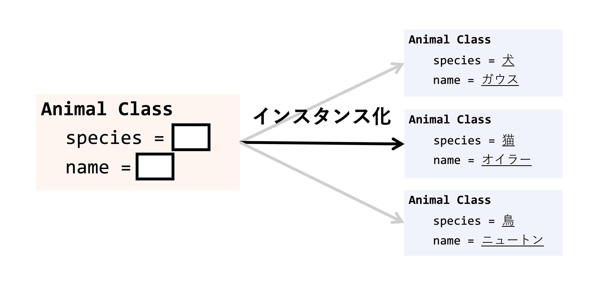
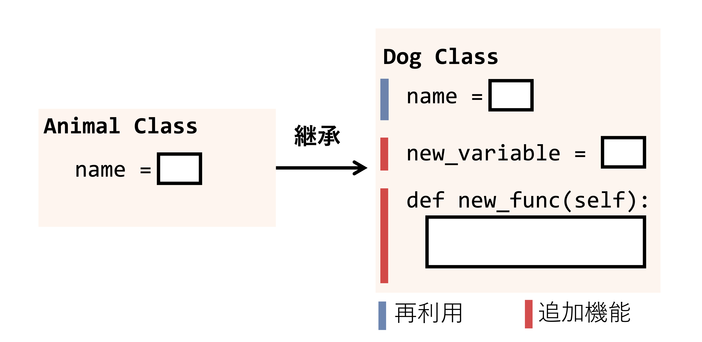

第10回：クラス（講義）#
担当：相澤宏旭
内容#
第10回目の講義では，Pythonだけでなくオブジェクト指向型プログラミング言語において重要なクラスの概念を学ぶ．クラスは関数以上に理解に手間取るプログラミングの仕組みであるが，使いこなすことができれば非常に便利な仕組みである．本講義では初めにクラスとは何か？関数との違いは？どのような場面で利用されるのか？について簡単に紹介したあと，クラスの作成方法やその機能を順番に解説する．具体的には，以下の項目について理解し，クラスを使いこなせることが本講義の目標である．
クラスの定義方法，クラスとインスタンス化の概念を理解する．
インスタンス変数，インスタンスメソッドを定義できる．
【発展】他クラスから継承し，新たなクラスを作成できる．
クラスとは？#

クラス（class） とはデータの値や処理の振る舞いのルールを記述できる仕組みである．クラスや振る舞いのルールを理解するために，図に示すような設計図をイメージされたい．私たちは何かモノを作るとき，モノの情報や作り方を決めた設計図を予め作成し，その設計図をもとにモノを作成する．例えば，カメラの場合だと，製品名，大きさ，デザイン，レンズ，写真の保存の仕方など製造するためのあらゆる情報が設計図には記載されている．そして，設計図からカメラを製造し，完成品ができる．クラスはこの一連の手順に含まれるモノの設計書としてイメージすると良い．そして，後述するが，Pythonでは設計図をもとに作成された完成品を インスタンス または オブジェクト といい，インスタンスを作成することを インスタンス化 という．
また，発展的な内容であるが，カメラの性能をアップデートしたり，デザインを変更した改良品の設計図を作成したい場合もある．Pythonでは，改良前の設計図をベースに新たな設計図を作成する 継承 という仕組みもサポートされている．クラスの簡単なイメージは以上であるが，厳密な定義や詳細な機能はゼロからはじめるプログラミングの内容を大幅に超えるため，本講義では，クラスがどのような場面で便利なのか？という視点から必要最低限の機能を紹介したい．
クラスの利用場面#
次の機能を持つプログラムを作成する場面を想定されたい．あなたは動物園の管理者で動物種に基づいて名前，飼育場所，画像など飼育動物の情報をコンピュータで管理する必要がある．まず初めに，飼育されている犬のガウス，猫のオイラーについて動物種と名前を管理してみよう．
このような複数データを扱う場合，リストが便利であった．
species = ['犬', '猫']
names = ['ガウス', 'オイラー']
print文を使って煩雑なコードであるが以下のように出力できる．
for i in range(len(species)):
print(f'{species[i]}：{names[i]}')
犬：ガウス
猫：オイラー
出力することができた．続いて，動物種に基づいて鳴き声を出力させることを考える．この場合，同様にリストでも管理することができるが関数の機能で実装する．
def dog_sound():
return 'ワンワン'
def cat_sound():
return 'ニャア'
for i in range(len(species)):
if species[i] == '犬':
sound = dog_sound()
elif species[i] == '猫':
sound = cat_sound()
print(f'{species[i]}：{names[i]} ... {sound}')
犬：ガウス ... ワンワン
猫：オイラー ... ニャア
for文と条件分岐を組み合わせて実装することができた．ではここから鳥のニュートンの情報と鳴き声関数を追加することも考えよう．リストで管理していたので鳥を追加した新たなリストと関数を定義すれば良い．
species = ['犬', '猫', '鳥']
names = ['ガウス', 'オイラー', 'ニュートン']
def bird_sound():
return 'チュンチュン'
for i in range(len(species)):
if species[i] == '犬':
sound = dog_sound()
elif species[i] == '猫':
sound = cat_sound()
elif species[i] == '鳥':
sound = bird_sound()
print(f'{species[i]}：{names[i]} ... {sound}')
犬：ガウス ... ワンワン
猫：オイラー ... ニャア
鳥：ニュートン ... チュンチュン
動物を追加するたびにリストの要素と関数を追加する必要がでてきたが実装することができた．
ここでクラスの利点をイメージしてもらうために次の場面を想像されたい．
飼育している動物が100頭以上いたらプログラムはどうなるだろうか？
体温や体重など定期的に更新する必要があるデータを管理したいときはどうすれば良いだろうか？
繁殖に成功し，同一種の動物の情報を追加したいときはどうすれば良いだろうか？
動物種をさらに細分化したいときはどうすれば良いだろうか？
あなた以外がこれらの情報を管理したいとき管理方法はどうすべきだろうか？
試しに実装してみるとわかると思うが，このような場面をリストで実装しようと思うと，データが増えたり，新たな情報や機能を追加するたびに，再度リストの定義を行い，プログラムを大きく書き換える必要がある．range関数や繰り返し処理の導入理由と同じように，大量のデータを持つ複数のリストの管理はデータの管理やコードの可読性の問題からプログラム作成者にとって非常に大変な作業となることは容易に想像できるだろう．
またこのような動物管理だけでは自身の専攻との関連が結びつきにくいかと思うが，例えば，
実験ごとに異なる実験パラメータや結果を持つ実験について実験の設定，実行方法，結果の保存を一貫して管理したい場面
物理法則や化学反応について異なる初期条件でのシミュレーションやアルゴリズムを実行したい場面
文書や書籍をについて著者，タイトル，内容などの情報の編集や管理を一括して行いたい場面
連絡先情報，購買履歴，顧客の好みなどユーザーから取得した情報を管理して分析したい場面
学生，教員，授業などを授業について時間割，成績，出席状況などの情報を一括で管理したい場面
イベントの枠組みについて日程，参加者，ロケーションなどの情報を扱いたい場面
インターネットから自動的に取得した情報を管理し，データの編集や分析を行いたい場面
を想像してもらうと，前述したクラスの利点やデータや機能を整理・操作・保守したりデータを分析し，新たな知見を得るためのプログラミングの活用場面がイメージできるかと思う．
以降，発展内容を含むが上記の例をベースにクラスを説明する．
Tip
クラスはPython特有の仕組みではなくC++やJavaなどオブジェクト指向型言語が持つ機能である．詳細は専門科目またはさらに勉強したい人へのPythonプログラミングを参考にされたい．
クラスの作成#

クラスは以下の例ように class を使うと定義することができる．
class クラス名:
def __init__(self):
初期化処理
classに加えて__init__とselfという新たな処理と名前が登場した．簡単に説明すると，__init__はクラスからデータを作成したときに一度だけ実行される初期化処理（初期化メソッド）である．またselfはクラス自身を示す変数である．selfは インスタンス変数 と呼ばれるクラスに保存された変数にアクセスするために利用される変数である．詳細は後述する．
これ以外にも，クラスには複数の機能がサポートされており，書き方にはさまざまな流儀がある．まずはコピー&ペーストでいいので使い方に慣れてほしい．
上図に示すような動物を管理するためのAnimalクラスを以下のように定義する．
class Animal:
def __init__(self):
print('動物クラスを作成しました')
上記のセルはクラスが持つルール（ここでは初期化メソッドのみ）を定義した．ここではクラスがもつ処理を定義しただけなので，セルを実行しただけでは何も表示されない．
クラスを利用するためにはクラスからデータの実体を作成する必要がある．これを インスタンス化 といい，クラスから作成されたデータの実体を インスタンス または オブジェクト という．以下のセルでクラスをインスタンス化してオブジェクト a を作成する．
a = Animal()
動物クラスを作成しました
上記のセルを実行すると，__init__内の処理である print('動物クラスを作成しました') が呼び出されたことがわかる．前述したように，これは初期化メソッドと呼ばれる __init__ による初期化処理がクラスからオブジェクトをインスタンス化したときに実行されたことを示している．
インスタンス変数の作成#
続いて，selfを理解するために，Animalクラスに動物種を追加してみる．以下のように，__init__を書き換えることで実装できる．
class クラス名:
def __init__(self, variable):
self.variable = variable
初期化処理を行う __init__ メソッドの引数に変数（variable）が加えられ，関数内部で self.variable = variableの処理が追加されている．この処理は関数の回で学んだ引数の受け渡しと．クラス自身を表す self に変数 variable を代入する処理である．言い換えると，クラス内部に変数 variable を保存する処理である．このクラスが持つ変数は インスタンス変数 と呼ばれ，この処理によってデータを保持できるのである．
以下でインスタンス変数を介して動物の名前 species を加えた新たなクラスを定義する．
class Animal:
def __init__(self, species):
self.species = species
インスタンス変数 self.species を持つクラスを定義できた．続いて，クラスからインスタンスを作成する．
ここで関数のときとどうように，__init__ メソッドには名前を示す変数 species が引数として加えられているのでインスタンス化のときに名前を与える必要がある．
a = Animal('犬')
今回は，__init__でprintをしていないので文字列が出力されていないことに注意されたい．インスタンス変数を出力するためには インスタンス.インスタンス変数名で変数にアクセスする．
a.species
'犬'
続いて，名前 name も追加したクラスを作成する．
class Animal:
def __init__(self, species, name):
self.species = species
self.name = name
インスタンス化の際には，species と name の両方を指定する必要がある．
a = Animal('犬', 'ガウス')
定義したインスタンスにアクセスし変数を出力する．
print(f'{a.species}の{a.name}です．')
犬のガウスです．
以上のように，インスタンス変数を持つクラスを定義することでインスタンスにデータをまとめることができた．
クラスの利点を確認するために，他の動物のインスタンスも作成してみる．
a = Animal('犬', 'ガウス')
b = Animal('猫', 'オイラー')
c = Animal('鳥', 'ニュートン')
定義したインスタンス a,b,c について異なるインスタンス変数が定義されていることを，アクセスするインスタンス名に注意しつつ，以下のセルから確認して欲しい．
print(f'{a.species}の{a.name}です．')
print(f'{b.species}の{b.name}です．')
print(f'{c.species}の{c.name}です．')
犬のガウスです．
猫のオイラーです．
鳥のニュートンです．
以上のようにデータ単位でインスタンス変数を扱うことができ，リストで管理するよりもデータの追加や削除が容易になったことがわかるかと思う．またインスタンス変数は数値データや文字列だけでなくリストや別のクラスから作成されたインスタンスも与えることができ，関数の引数のようにデフォルト引数やキーワード引数も設定できる．
Caution
インスタンス変数は実行の手順からわかるように，インスタンス化 されて初めてクラスに保存される変数である．また __init__ 内部で variable と self.variable はそれぞれ引数によって与えられた変数，インスタンスが持つ変数であることに注意されたい．これらの変数は意味が異なるのである．
リストで学ぶインスタンス化#
クラスとインスタンスはプログラミング初学者にとって非常にわかりにくい概念である．よくある説明例としては，前述のようにクラスは設計図，インスタンスは設計図をもとに作成されたモノであるというものである．もし，この説明例で理解ができなかったとしても，利用するだけなら容易であるため心配は不要である．第2回で学んだ リスト を思い出してほしい．リストの作成は既にできるはずである．
l = [1, 2, 3] # リストクラスからインスタンスの作成
print(l)
[1, 2, 3]
実は，上記の処理はリストの振る舞いを定義した設計図（ list クラス）から，初期値 1,2,3 を与えられ，リストの実体 l を作成（インスタンス化）しているのである．ゼロから始めるプログラミングではクラスが利用できるだけも十分である．プログラムの内部の挙動や仕組みを理解する前に，コードを写径し，とりあえず実行してみることも大切である．
インスタンスメソッドの定義#
前述のセルでは作成したインスタンスに対して print 文を呼び出した．データの管理はクラスによって容易になったが，処理・機能は不便なままである．そこで，クラスが持つ機能を新たに追加する．このクラスが持つ機能は インスタンスメソッド または インスタンス関数 と呼ばれ，以下のように定義できる．
class クラス名:
def __init__(self, variable):
self.variable = variable
def インスタンスメソッド名(self, 引数):
処理
__init__と同じ深さのインデントで新たなメソッド（処理）を定義している．これがインスタンスメソッドである．メソッドの第一引数は self を指定することに注意されたい．以下が，前述の print をインスタンスメソッドとして定義した Animal クラスである．
class Animal:
def __init__(self, species, name):
self.species = species
self.name = name
def print_data(self):
print(f'{self.species}の{self.name}です．')
初期化メソッド（__init__）で self.species = species と self.name = name でクラスが持つインスタンス変数を作成した．今回導入したインスタンスメソッドないで self.species と self.name のインスタンス変数にアクセスしていることに着目されたい．後述するが，print_data で引数として species や name を与えることなく，このような処理が設計できることがポイントであり，第8回で学んだ関数との大きな違いである．
インスタンスメソッドの呼び出しをするために，まずクラスからインスタンス化をする．
a = Animal('犬', 'ガウス')
b = Animal('猫', 'オイラー')
c = Animal('鳥', 'ニュートン')
インスタンスメソッドは インスタンス名.インスタンスメソッド名(引数)で呼び出すことができる．
a.print_data()
b.print_data()
c.print_data()
犬のガウスです．
猫のオイラーです．
鳥のニュートンです．
以上よりインスタンス変数に外からアクセスすることなくクラス内で完結する処理（=インスタンスに紐付けられた処理）を実現できたことが確認できる．
インスタンスメソッドは第8回で学んだ関数のようにreturnもできる．動物の情報をリストとして return するインスタンスメソッド get_data を実装してみる．
class Animal:
def __init__(self, species, name):
self.species = species
self.name = name
def print_data(self):
print(f'{self.species}の{self.name}です．')
def get_data(self):
animal_data = [self.species, self.name]
return animal_data
リスト型のデータがreturnされる．returnされたデータを出力する．
a = Animal('犬', 'ガウス')
animal_data = a.get_data()
print(animal_data)
['犬', 'ガウス']
関数と同様に return できることが確認できた．
インスタンスメソッドには引数も与えることができる．以下に，print_dataメソッドの引数に年齢を示す age を加えて，同様に print するメソッドを実装する．
class Animal:
def __init__(self, species, name):
self.species = species
self.name = name
def print_data(self, age):
print(f'{self.species}の{self.name}は{age}歳です．')
def get_data(self):
animal_data = [self.species, self.name]
return animal_data
インスタンスメソッドへの引数 age を渡すことを忘れないようにインスタンス化と呼び出しを行えば，インスタンスメソッド内でインスタンス変数と引数の両方へアクセスできることがわかるかと思う．
a = Animal('犬', 'ガウス')
a.print_data(5)
犬のガウスは5歳です．
以上より，クラスにデータだけでなく機能（関数）を追加する方法を学んだ．ここまででもリストと比較して便利にデータを管理できることがイメージできるかと思う．
Tip
上記のreturnは第8回 複数の戻り値を利用せずに単一のリストでreturnしている．タプルで複数の戻り値として実装することもできる．
インスタンスメソッドをクラス内で呼び出す#
インスタンスメソッドもまたインスタンス変数と同じようにクラス内で呼び出すことができる．これは self.インスタンスメソッド名(引数)で実現できる．以下のコードを参考にされたい．
class Animal:
def __init__(self, species, name):
self.species = species
self.name = name
def print_data(self):
print(f'{self.species}の{self.name}です．')
def get_data(self):
animal_data = [self.species, self.name]
return animal_data
def check_data(self):
animal_data = self.get_data()
print(animal_data)
上記のAnimalクラスにはインスタンスメソッドget_dataをインスタンスメソッド内で呼び出すcheck_dataが追加で含まれている．get_dataをインスタンスメソッド内で呼び出せることを確認するために，インスタンス化して，check_dataメソッドを呼び出す．
a = Animal('犬', 'ガウス')
a.check_data()
['犬', 'ガウス']
get_dataが呼び出されて，前述の例と同様の結果が得られたことがわかる．
リストで学ぶインスタンスメソッド#
インスタンス化の項で既に学んだ リスト の実態はリストの挙動がまとめられたクラスからインスタンス化されたデータであると説明した．リストは以下で定義できた．
l = [1, 2, 3] # リストクラスからインスタンスの作成
print(l)
[1, 2, 3]
ここで，再度，第2回の リストの演算 にある要素の追加・削除・挿入の説明を読み返してほしい．例えば，要素を追加したいときは，リスト.append(追加する値)と呼び出すとあった．
l.append(100)
print(l)
[1, 2, 3, 100]
実は，このappendはインスタンスメソッドなのである．本講義では，クラス・インスタンス変数・インスタンスメソッドなど聞きなれない用語が多数現れるが，各データ型が持つ機能を調べさえすればプログラミングは容易にできるのである．そして，クラスの概念と使い方をある程度理解できれば，Pythonのリストの機能を拡張したり，データ型自体を定義するといったことができるようになる．
クラスのまとめ
クラスは変数や処理（関数）をまとめた設計図のような機能である．
このとき変数はインスタンス変数，処理はインスタンスメソッドと呼ばれる．
クラスからデータの実態を作成するためにインスタンス化という手順が必要である．
インスタンス化をしたとき初期化メソッドである
__init__が呼び出される．
クラス自身は
selfから参照できる．
Important
本講義は教養科目ということもあり，クラスの詳細な機能やオブジェクト指向型プログラミングに関する詳しい説明は省略している．本講義でPythonの基礎文法の内容は終了であるが，クラスだけでなく関数といったこれまで勉強した使い方以外にも，Pythonにはより綺麗で便利なプログラムを作成するための仕組みがいくつも提供されている．ぜひ，本講義資料だけでなく，さらに勉強したい人へ: Pythonプログラミングのページから自身で調べてみてほしい．
【発展】 関数とインスタンスメソッドの違い#
ここまでのインスタンスメソッドの定義方法と利用場面を理解できた受講者はおそらく「関数とインスタンスメソッドの違いってなんだろう？」と疑問に思うだろう．厳密な違いを理解するためには，オブジェクト指向プログラミング そのものの説明が必要であり，ゼロからはじめるプログラミングの内容を大きく超えてしまうのでここでは以下のサンプルコードからこの違いを簡単に説明したい．
第8回の講義で学んだように関数は与えた入力に対してなんらかの処理をして出力する変換装置のイメージであった．上記の例と同様に， {動物種}の{名前}です． と print する関数を考える．
def print_data(species, name):
print(f'{species}の{name}です．')
print_data('犬', 'ガウス')
犬のガウスです．
上記のように print_data関数で飼育動物の情報を出力できる．実装する機能によっては関数で十分であるが，引数をその都度渡す必要があり，クラスの利用場面で述べたように膨大なデータ数を管理したり，データの構造をカスタマイズしたいときなど不便となる場合がある．
一方，インスタンスメソッドの例として前述したクラス内に定義された print_data関数を思い出してほしい．
a = Animal('犬', 'ガウス')
a.print_data()
犬のガウスです．
この関数も同様の出力を得られるが，以下の2点が関数と異なる．
インスタンス変数を呼び出すことができる．
クラスに紐付けられている．
1点目は両者の引数を見てもわかるだろうが，インスタンスメソッドはメソッド内で引数に与えることなくインスタンス変数を参照できる．そのため，呼び出すたびに引数を指定する必要がなく，インスタンス変数に関係した機能を定義することができる．これと関連するが，インスタンスメソッドはクラスに備わっている関数であるため，類似した機能を持つクラスを定義するときや，複数のデータをクラスで管理するときに便利な仕組みとなる．詳細はリストによるクラスの管理やクラスの継承で後述する．クラスにおけるインスタンスメソッドは，関数の仕組みを インスタンス変数 で拡張した仕組みとも言える．
また前述のリストで学ぶインスタンスメソッドを読むと，リストの要素を定義するインスタンス化の処理が必要であること，リストに新たな要素を追加する処理は関数よりもインスタンスメソッドとして定義されている方が便利であることがイメージできる．
【発展】 リストによるクラスの管理#
前述までのクラスの利用方法では，ある動物に対して新たな関数やデータを追加することは便利であるが，複数の動物を管理しようとしたとき，頭数分のインスタンスメソッドの呼び出しが必要となる．発展的なテクニックであるが，インスタンスをリストで管理するとループを使って便利に管理できる．
zoo = [
Animal('犬', 'ガウス'),
Animal('猫', 'オイラー'),
Animal('鳥', 'ニュートン')]
for animal in zoo:
animal.print_data()
犬のガウスです．
猫のオイラーです．
鳥のニュートンです．
このように管理すると新たな動物を加えるときも便利である．
zoo = [
Animal('犬', 'ガウス'),
Animal('猫', 'オイラー'),
Animal('鳥', 'ニュートン'),
Animal('羊', 'マクローリン'),
Animal('豚', 'ポアソン')]
for animal in zoo:
animal.print_data()
犬のガウスです．
猫のオイラーです．
鳥のニュートンです．
羊のマクローリンです．
豚のポアソンです．
もちろんリストだけでなく辞書などの他のデータ型で管理しても良い．クラスのインスタンスを管理するクラスも考えることができる．管理する方法は作成したいアプリケーションの要件に依存するが，色々な実装を試してみると良い．
【発展】 クラスの継承#

これまでは新たな変数や機能を追加しようとしたとき，クラスの再定義が必要であった．Pythonを含むオブジェクト指向型言語には，クラスの機能を別のクラスで再利用する 継承 という仕組みが提供されている．ここでは，継承を利用して，クラスを再定義することなく，変数や機能を追加する方法について説明する．
継承の方法は以下である．class クラス名:に継承するクラス名を与えると継承するクラスのインスタンスメソッドが利用できる．super().__init__()は継承するクラスの__init__関数を呼び出している．
class クラス名(継承するクラス名):
def __init__(self, variable, new_variable):
self.new_variable = new_variable
super().__init__(variable)
def 新たに追加するインスタンスメソッド名(self, 引数):
処理
継承元のインスタンス変数を利用しない場合は super()を呼び出す必要はないことに注意されたい（インスタンスメソッドのみを利用したい場合など）．
親クラスと子クラス
継承元のクラスは親クラスやスーパークラス，継承先のクラスは子クラスやサブクラスと呼ばれる．
実際にクラスの継承から鳴き声機能を持つ動物種単位の新たなクラスの実装を試みる．これまでの Animal クラスは動物種を示す species 変数を持っていた．鳴き声は動物種ごとに異なるので Animal クラス内でインスタンスメソッドを複数定義するのではなく，動物種単位で新たにクラスを設計することが望ましい．
そこで，まずは動物種を引数として受け取っていた Animal クラスを修正して，継承用に再定義する．
class Animal:
def __init__(self, name):
self.name = name
def print_data(self):
print(f'{self.name}です．')
def sound(self):
pass
クラスの設計段階で定義したいメソッドなどは上記のように 何もしない関数 である pass を用いて定義しておくと良い．
では新たに定義した Animal クラスを継承し，犬クラス（Dog）と猫クラス（Cat）を定義する．
class Dog(Animal): # 継承するクラスを指定
def __init__(self, name):
super().__init__(name) # 継承するクラスの __init__ を呼び出す
def sound(self): # 犬の鳴き声メソッド
print('ワンワン')
class Cat(Animal):
def __init__(self, name):
super().__init__(name)
def sound(self): # 猫の鳴き声メソッド
print('ニャア')
まず，継承の利点を理解するために，Animalクラスを再利用して作成したDog, CatクラスにはAnimalクラスで定義されたインスタンス変数（name）とインスタンスメソッド（print_data）が利用できることを確認されたい．
zoo = [Dog('ガウス'), Cat('オイラー')]
for animal in zoo:
animal.print_data()
ガウスです．
オイラーです．
このようにインスタンス変数の代入やインスタンスメソッドを再定義することなく継承元の機能を利用できる継承の利点を確認できたかと思う．
続いて，Dog, Catクラスを作成するときに再定義したメソッド（sound）を呼び出す．
zoo = [Dog('ガウス'), Cat('オイラー')]
for animal in zoo:
animal.print_data()
animal.sound()
print('') # 改行用のprint
ガウスです．
ワンワン
オイラーです．
ニャア
以上より継承元のメソッドと新たに追加したメソッドの両方を呼び出せることが確認できた．継承を利用することで継承元のクラス（Animal）を修正することで継承したクラス（Dog, Cat）のデータや機能を拡張できる．
オーバーライド
soundメソッドのように継承元のクラスの機能を上書きすることを オーバーライド と呼ぶ．
補足となるがこのようなクラス設計をしておくと，名前は違う別の犬を管理したいときも可読性が良い．以下のサンプルコードを確認されたい．
dog = Dog('犬A')
another_dog = Dog('犬B')
dog.print_data()
another_dog.print_data()
犬Aです．
犬Bです．
このように同一種（犬）の異なる犬（犬Aと犬B）を管理する場面では，リストよりもコードがわかりやすくなる．